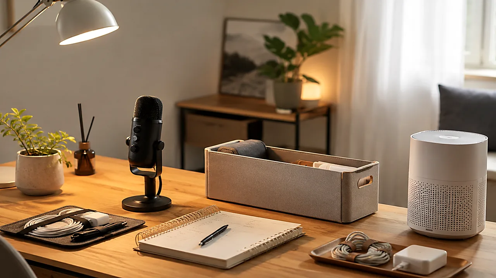

TrendFlow Guide
AI 대본 루틴AI로 쇼츠 대본을 하루 3개 뽑는 루틴
트렌드 키워드 1개를 문제형·비교형·체크리스트형 쇼츠 대본 3개로 확장하는 루틴입니다.
글 보기 →AI를 많이 쓰는 것보다 반복 작업을 줄이는 구조를 먼저 만듭니다. 쇼츠 대본, 후킹 문장, 프롬프트 저장, 블로그 초안, 사이트 유입 흐름을 5개 글로 정리했습니다.
자세한 내용은 글 안에 두고, 카테고리에서는 빠르게 선택할 수 있게 정리했습니다.
트렌드 키워드 1개를 문제형·비교형·체크리스트형 쇼츠 대본 3개로 확장하는 루틴입니다.
글 보기 → TrendFlow Guide
TrendFlow Guide문제형, 비교형, 저장형 후킹 문장을 비교해 어떤 주제에 더 잘 맞는지 정리합니다.
글 보기 → TrendFlow Guide
TrendFlow Guide쇼츠, 블로그, 상품 비교, 체크리스트용 프롬프트를 목적별로 저장하는 방법입니다.
글 보기 →쇼츠 주제를 블로그 초안과 카테고리 글로 확장하는 30분 작업 흐름입니다.
글 보기 →
TrendFlow Guide짧은 영상에서 상세 글로 자연스럽게 이동시키는 CTA와 내부링크 구조를 정리합니다.
글 보기 →어떤 글부터 볼지 10초 안에 판단할 수 있도록 문제와 해결 방향을 비교했습니다.
| 주제 | 필요한 상황 | 먼저 볼 포인트 |
|---|---|---|
| AI 대본 루틴 | 아이디어는 있는데 대본으로 바꾸는 시간이 오래 걸리는 상황 | 하나의 키워드를 세 가지 후킹 구조로 나누어 초안을 빠르게 만든다 |
| 후킹 비교 | 조회수보다 초반 이탈이 더 큰 문제인 상황 | 주제별로 후킹 문장 3개를 만들고 가장 자연스러운 문장을 선택한다 |
| 프롬프트 정리 | 매번 비슷한 AI 요청문을 새로 쓰는 상황 | 결과물 기준으로 프롬프트를 분류해 재사용한다 |
| 블로그 초안 | 쇼츠 주제가 글로 연결되지 않고 단발성으로 끝나는 상황 | 제목·문제·해결순서·FAQ를 고정 템플릿으로 작성한다 |
| 사이트 유입 | 쇼츠 조회수는 생기지만 사이트 방문으로 이어지지 않는 상황 | 쇼츠에는 문제를 보여주고 사이트에는 기준표와 체크리스트를 둔다 |